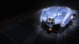

Трюм под руду (на практике)
~50–70 т
У недорогого корпуса Lakon есть редкое для этой цены преимущество: ангар для бортового истребителя. Трюм под руду небольшой: место занимают ангар, переработчик и контроллеры дронов . За рейс увезёшь немного, и объём добычи невысок. Keelback стоит брать, только если тебе нужна недорогая защита с помощью бортового истребителя (SLF).

Оценка пригодности корабля от 1 до 100 учитывает его полностью улучшенную сборку и сравнивает её с другими кораблями в этой роли. Подробнее: как оцениваются корабли.
Во время добычи корабль почти неподвижен. У Keelback редкое для такой цены средство защиты — ангар для бортового истребителя. Этот грузовой корабль на основе Type-6 способен вести бой. Если пират перехватит тебя во время добычи, выпусти истребитель. Им можешь управлять ты, член экипажа или наёмный пилот. Истребитель помогает отогнать пирата и спасти груз.
Под руду помещается около 98 т. Место занимают ангар, переработчик и контроллеры дронов, поэтому много за рейс не увезёшь. Если важен объём добычи, это невыгодно. Зато пилоту, которому нужна реальная самооборона или нравится управлять истребителем, Keelback даёт то, чего нет у других бюджетных шахтёров: возможность дать отпор, не заплатив столько, сколько за Python.
Бюджетная лазерная добыча с защитой в кольцах с пиратами. Можно добывать вместе с другом, который управляет истребителем. Тот же недорогой корпус годится для перевозок и лёгких боёв.
Четыре особенности Keelback в добыче:
Ангар, переработчик и контроллеры занимают место. Руды за рейс немного, и по объёму добычи корабль слаб. Чтобы истребитель защищал тебя, пока ты добываешь, им должен управлять член экипажа или наёмный пилот. По тоннам руды на кредит Keelback невыгоден: его стоит брать именно ради недорогой защиты.
Ангар на корабле дешевле 3 млн кредитов, средняя площадка и отсутствие требований к рангу дают доступного шахтёра с защитой. Но ~98 т максимального груза и около 70 т на практике ограничивают его узкой нишей.
68/100 — итог по критериям добычи в порядке их важности. У каждого критерия есть вес (его доля из 100). Баллы по нему зависят от того, как корабль показал себя на фоне остальных. Сумма баллов даёт итоговую оценку.
| Критерий | Баллы | Почему столько |
|---|---|---|
| Полезная вместимость под руду | 15/35 | Максимум — около 98 т. Ангар, переработчик и два контроллера дронов занимают часть отсеков (5/5/4/3/2/2/1), оставляя примерно 50–70 т под руду, около 70 т с улучшениями. Это мало на фоне Python (~294 т), Type-8 (~406 т) и даже Krait Mk II (~230 т). |
| Вместимость под инструменты | 19/25 | Четыре оружейных крепления (2 средних и 2 малых) вмещают два лазера, подповерхностную ракету и абразивный бластер. Есть три внешних крепления, в том числе под анализатор импульсных волн, а в отсеках помещаются переработчик и контроллеры сборщиков и разведчиков. Набор полный, но в отсеках не больше пятого размера он делит место с ангаром и двухконтурным щитом. |
| Живучесть | 13/15 | Ангар 5D позволяет выпустить истребитель, который отгоняет пиратов, опасных для шахтёров с грузом. Защиту дополняют двухконтурный щит 3C и усилитель 0A, а корпус прочнее базового Type-6. Для бюджетного шахтёра это одна из лучших защит. |
| Площадка и доступ | 13/15 | Средняя площадка подходит большинству станций. Ранг и разрешение не нужны. У вариантов с большими площадками, таких как Type-11 и Type-7 в сравнении оригинала, трюмы больше, но доступ к посадке хуже. |
| Цена и специализация | 8/10 | Корпус стоит около 2,95 млн кредитов, а полная сборка — около 12 млн. Это самый дешёвый шахтёр с реальной самообороной, ранг не нужен. Но во всех трёх вариантах мало руды на кредит. Преимущество — цена, не объём. |
| Взвешенный итог | 68/100 | Эта сумма совпадает с общей оценкой корабля в этой роли. |
Вес критерия отражает приоритеты авторов гайда, а не формулу игры. Длина полосы показывает, какую долю от максимума корабль набрал по этому критерию. Подробнее: как оцениваются корабли.
Таблицы сравнивают корабли именно для добычии разделяют их по размеру посадочной площадки. Столбец Макс. груз указывает максимальный груз руды в тоннах. Пригодность оценивается по общей шкале сайта от 1 до 100.
| Корабль | Класс | Макс. груз | Плюсы и минусы | Оценка |
|---|---|---|---|---|
| Type-11 Prospector | Средняя | ~288 т | Выше оценка; оснащение; доступ к площадкамЦена | 95 |
| Python | Средняя | ~294 т | Выше оценка; оснащение; живучестьТрюм под руду | 90 |
| Krait Mk II | Средняя | ~230 т | Выше оценка; живучесть; доступ к площадкамТрюм под руду | 84 |
| Type-8 Transporter | Средняя | ~406 т | Выше оценка; трюм; оснащениеЖивучесть | 84 |
| Krait Phantom | Средняя | ~190 т | Выше оценка; доступ к площадкам; оснащениеЖивучесть | 70 |
| Corsair | Средняя | ~318 т | Живучесть; доступ к площадкамЦена | 68 |
| Keelback этот | Средняя | ~98 т | — отправная точка для сравнения | 68 |
| Asp Explorer | Средняя | ~130 т | Оснащение; доступ к площадкамНиже оценка; живучесть | 64 |
| Type-6 Transporter | Средняя | ~114 т | Цена; доступ к площадкамНиже оценка; живучесть | 62 |
Из девяти оценённых кораблей для средней площадки лидирует Type-11 Prospector (95). Все соперники в таблице садятся на такие же площадки. С них и стоит начинать сравнение.
| Корабль | Класс | Макс. груз | Плюсы и минусы | Оценка |
|---|---|---|---|---|
| Imperial Cutter | Большая | ~794 т | Выше оценка; оснащение; живучестьПосадочная площадка | 92 |
| Type-9 Heavy | Большая | ~790 т | Выше оценка; трюм; ценаЖивучесть | 90 |
| Anaconda | Большая | ~470 т | Выше оценка; оснащение; живучестьПосадочная площадка | 86 |
| Type-7 Transporter | Большая | ~310 т | Выше оценка; цена; оснащениеЖивучесть | 78 |
| Panther Clipper Mk II | Большая | ~662 т | Выше оценка; трюм; оснащениеЦена | 77 |
| Imperial Clipper | Большая | ~250 т | Выше оценка; цена; живучестьПосадочная площадка | 70 |
| Type-10 Defender | Большая | ~534 т | Выше оценка; живучесть; оснащениеЦена | 70 |
| Federal Corvette | Большая | ~618 т | Живучесть; трюмНиже оценка; цена | 64 |
| Caspian Explorer | Большая | ~434 т | Оснащение; живучестьНиже оценка; цена | 60 |
Из девяти оценённых кораблей для больших площадок лидирует Imperial Cutter (92). Они выигрывают по характеристикам, но требуют больше денег и больших площадок.
| Корабль | Класс | Макс. груз | Плюсы и минусы | Оценка |
|---|---|---|---|---|
| Cobra Mk V | Малая | ~110 т | Доступ к площадкам; оснащениеНиже оценка; трюм | 58 |
| Cobra Mk III | Малая | ~64 т | Доступ к площадкам; ценаНиже оценка; живучесть | 52 |
| Adder | Малая | ~30 т | Доступ к площадкам; ценаНиже оценка; живучесть | 48 |
Из трёх оценённых кораблей для малых площадок лидирует Cobra Mk V (58). Это более дешёвые корпуса для небольших площадок. Характеристики скромнее, зато требования к посадке другие.
Около 2,95 млн кредитов за корпус без требований к рангу. Ангар и истребитель увеличивают цену: полная сборка с защитой обойдётся примерно в 12 млн кредитов.
Это необычный корабль для узкой задачи. Если важнее объём, Type-8 (или даже Type-7) возит гораздо больше. Keelback имеет смысл, если тебе нужна именно недорогая защита истребителем.
Примерно 12 млн кредитов за бюджетного шахтёра, который выпускает истребитель для защиты от пиратов. Интересная ниша, но трюм мал, а более вместительные корабли дешевле в пересчёте на тонну.
Бюджетная сборка для добычи с защитой, построенная вокруг ангара. Начальная требует только покупок, класс A — рабочая основа, инженерные улучшения повышают защиту и подвижность. Добывающие инструменты остаются штатными.
| Отсек | Начальная · только покупка | Класс A · без улучшений | С инженерными улучшениями | Примечания |
|---|---|---|---|---|
| Оружейные крепления | ||||
| Среднее 1 | 2D Добывающий лазер (неподвижный) | 2D Добывающий лазер (неподвижный) | (нет чертежа улучшения) | Модуль второго размера — добывающий лазер на среднем креплении, основной инструмент для добычи руды. От инженерных улучшений пользы почти нет, оставь штатным. |
| Среднее 2 | — | 2B Ракета для извлечения подповерхностных залежей (неподвижный) | (нет чертежа улучшения) | Ракета извлекает подповерхностные залежи. Оставь её штатной: добывающие инструменты почти ничего не выигрывают от улучшений. |
| Малое 1 | — | 1D Абразивный бластер (неподвижный) | (нет чертежа улучшения) | Абразивный бластер сбивает поверхностные залежи с ядра, чтобы их собрали дроны. Он остаётся штатным. |
| Малое 2 | — | 1D Добывающий лазер (неподвижный) | (нет чертежа улучшения) | Второй Добывающий лазерпервого размера на малом креплении повышает темп добычи. Оставь его штатным. |
| Внешние крепления | ||||
| Крепление 1 | — | 0C Анализатор импульсных волн | (нет чертежа улучшения) | Анализатор импульсных волн подсвечивает ядра и залежи в кольце. Для него нет инженерного чертежа. |
| Крепление 2 | — | 0A Усилитель щита | G5 Усиленная конструкция + Суперконденсаторы | Усилитель щита усиливает двухконтурный щит. «Усиленная конструкция» повышает прочность в МДж, пока истребитель отбивается от пиратов. |
| Крепление 3 | — | 0I Теплоотводная катапульта | G1 Дополнительный боезапас (без экспериментального эффекта) | Необязательно. Дополнительный боезапас даёт больше теплоотводов. Они снимают нагрев при скрытном ходе и помогают сбросить температуру. |
| Основные модули | ||||
| Обшивка | Лёгкий сплав | Лёгкий сплав | Облегчение 5-й ступени (без экспериментального эффекта) | |
| Энергетическая установка | 4E Энергетическая установка | 4A Энергетическая установка | G5 Низкие выбросы + Рассеивание тепла | Класс A позволяет одновременно использовать ангар, добывающие лазеры, дронов и щит. «Низкие выбросы» снижают нагрев и заметность, а «Рассеивание тепла» дополнительно отводит тепло. |
| Маневровые двигатели | 4E Маневровые двигатели | 4A Маневровые двигатели | G5 Примени «Грязную настройку» + Форсированные двигатели | Класс A с улучшением «Форсированные двигатели» дают достаточно скорости, чтобы менять позицию в кольце и уходить при перехвате. |
| Рамочно-сместительный двигатель (FSD) | 4E Рамочно-сместительный двигатель (FSD) | 4A Рамочно-сместительный двигатель (FSD) | G5 «Увеличенная дальность» + Управление массой | Класс A с улучшением Двигатель FSD с «Увеличенной дальностью» помогает добираться до зон концентрации и возвращаться с рудой. «Управление массой» увеличивает дальность с грузом. |
| Система жизнеобеспечения | 1E Система жизнеобеспечения | 1D Система жизнеобеспечения | G5 Облегчение (без экспериментального эффекта) | Поставь класс D в отсек первого размера для меньшей массы. «Облегчение» уменьшит её ещё сильнее: системы жизнеобеспечения нет экспериментального эффекта. |
| Распределитель энергии | 3E Распределитель энергии | 3A Распределитель энергии | G3 Упор на двигатели + Блочные конденсаторы | Класс A питает лазеры и дронов без перебоев. «Упор на двигатели» помогает чаще включать форсаж при уходе, пока истребитель ведёт бой. |
| Сенсоры | 2E Сенсоры | 2D Сенсоры | G5 Облегчение (без экспериментального эффекта) | Поставь класс D и «Облегчение». Для добычи дальность сенсоров не нужна. |
| Топливный бак | 4C Топливный бак | 4C Топливный бак | (нет чертежа улучшения) | Штатный бак класса C. Вместимость фиксированная, инженерных улучшений нет. |
| Дополнительные отсеки | ||||
| Размер 5 | 5E грузовой стеллаж | 5D Ангар для истребителя | (нет чертежа улучшения) | Главная особенность Keelback — ангар. Выпускай истребитель, чтобы он отгонял пиратов, пока ты работаешь. Ангар нельзя улучшить у инженеров. |
| Размер 5 | 5E грузовой стеллаж | 5E грузовой стеллаж | (нет чертежа улучшения) | Необязательно. Дополнительное место под груз пригодится при перевозках. Грузовые стеллажи нельзя улучшить у инженеров. |
| Размер 4 | — | 4A Переработчик | G5 Защищённый (без экспериментального эффекта) | Необязательно. «Защищённый» повышает прочность переработчика. Он превращает собранные обломки в товар. |
| Размер 3 | — | 3C Генератор двухконтурного щита | G5 Усиленный + Быстрая зарядка | Двухконтурный щит защищает от ударов и огня пиратов, пока истребитель ведёт бой. «Усиленный» даёт запас прочности, «Быстрая зарядка» ускоряет восстановление. |
| Размер 2 | — | 1A Контроллер дронов-сборщиков | G5 Облегчение (без экспериментального эффекта) | Необязательно. «Облегчение» уменьшает массу контроллера. Он запускает дронов-сборщиков. |
| Размер 2 | — | 1A Контроллер дронов-разведчиков | G5 Облегчение (без экспериментального эффекта) | Необязательно. «Облегчение» уменьшает массу контроллера. Он запускает дронов-разведчиков. |
| Размер 1 | — | 1I подробный сканер поверхности 1I | (нет чертежа улучшения) | Необязательно. Улучшение увеличивает площадь, которую покрывает каждый зонд при составлении карты планеты. |
| Планировщики и экспорт | ||||
| Открыть в Coriolis | открыть | открыть | открыть | Открывает сборку на coriolis.io. |
| Открыть в EDSY | открыть | открыть | открыть | Открывает сборку на edsy.org. |
| Скопировать SLEF | Копирует выбранную сборку в формате экспорта оснащения корабля (SLEF). | |||
Ангар — причина добывать на Keelback. Истребитель отгоняет пиратов, пока ты работаешь в кольце, но под руду, переработчик и контроллеры дроновостаётся мало места. За рейс увезёшь немного, зато можно пережить нападения, от которых простые бюджетные шахтёры не спасутся.
Купи корпус примерно за 2,95 млн кредитов и поставь только начальный комплект: один 2D добывающий лазер (неподвижный) на среднее крепление и два 5E грузовых стеллажапод руду. С завода стоит лёгкая обшивка из сплава . Бюджетному шахтёру незачем тратиться на броню. Оставь основные модули класса E: установку, двигатели, FSD, распределитель и сенсоры, и топливный бак 4C.
Остальные отсеки пока оставь пустыми. Ангар, переработчик, контроллеры разведчиков и сборщиков, двухконтурный щит, второй добывающий лазер, подповерхностную ракету, абразивный бластер и внешние сканеры добавишь в сборке класса A.
Сначала только корпус и лазер. Руду можно сбить, но перерабатывать её, защищаться и выпускать истребитель пока не получится.
Что в первую очередь поставить на бюджетного шахтёра с защитой (обшивку оставь штатной, из лёгкого сплава ; лучше потратиться на инструменты, а не на броню):
На небольшом корпусе ангар, добывающие лазеры и дроны требуют много энергии. Поставь установку класса A, чтобы всё работало одновременно.
Инженерных улучшений немного. Улучшай корабль, а не инструменты. Felicity Farseer улучшает FSD. Закрепляй чертежи для удалённого применения с 1-й по 5-ю ступень.
| Модуль | Чертёж | Экспериментальный эффект | Инженер |
|---|---|---|---|
| Энергетическая установка (4) | Низкие выбросы (G5) | Рассеивание тепла | Hera Tani |
| Распределитель энергии (3) | Упор на двигатели (G3) | — | The Dweller |
| Рамочно-сместительный двигатель (FSD) (4) | «Увеличенная дальность» (G5) | Управление массой | Felicity Farseer |
| Маневровые двигатели (4) | Примени «Грязную настройку» (G5) | Форсированные двигатели | Professor Palin / Mel Brandon |
| Двухконтурный щит (3) | Усиленный (G5) | Быстрая зарядка | Lei Cheung |
| Усилитель щита | Усиленная конструкция (G5) | Суперконденсаторы | Didi Vatermann |
| Обшивка | Облегчение (ступень 5) | — | Selene Jean |
Небольшой расход: нужны только чертежи подвижности и защиты корабля, инструменты остаются штатными. Если материалы уже есть, собирать их заново не придётся. При необходимости сверь точное количество по каждому чертежу.
Ориентировочные показатели для трёх сборок. Точный результат зависит от оснащения:
| Показатель | Начальная | Класс A | С инженерными улучшениями |
|---|---|---|---|
| Руда за рейс (т) | ~40 | ~60 | ~70 |
| Самооборона | Нет | Бортовой истребитель (SLF) | Бортовой истребитель (SLF) |
| Дальность с грузом, св. лет | ~16 | ~24 | ~30 |
| Скорость с форсажем | 303 м/с | 303 м/с | ~340 м/с |
| Руда на кредит | мало | мало | мало |
После улучшений трюм вмещает примерно 70 т. Истребитель защищает груз: недорогой Keelback переживает нападения в кольцах, где обычный бюджетный грузовик бы погиб. Штатную обшивку оставляют из лёгкого сплаваи улучшают по чертежу «Облегчение» 5-й ступени , чтобы убрать массу. Именно снижение массы, не усиление брони, даёт около 30 св. лет с грузом и около 340 м/с на форсаже. Руды на кредит немного. Главная причина выбрать этот корабль вместо более вместительного — истребитель.
Keelback с истребителем подходит для любого достаточно богатого кольца, в том числе с пиратами. От домашней базы можно недорого слетать за рудой и защитить себя.
Keelback — доступный шахтёр с бортовым истребителем, редким для такой цены. Ангар и инструменты занимают место, поэтому руды за рейс мало. Но вместо того, чтобы погибнуть с грузом при встрече с пиратом, можно выпустить истребитель. Ради этого Keelback и стоит брать, хотя его ниша узкая.
Цифры в статье сверены авторами оригинала с источниками ниже.